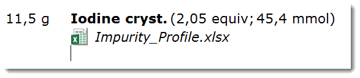
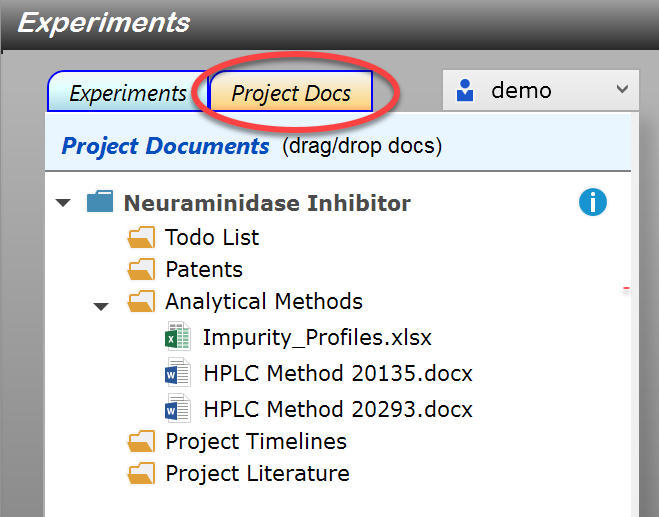
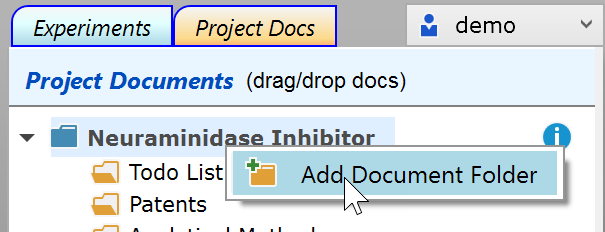
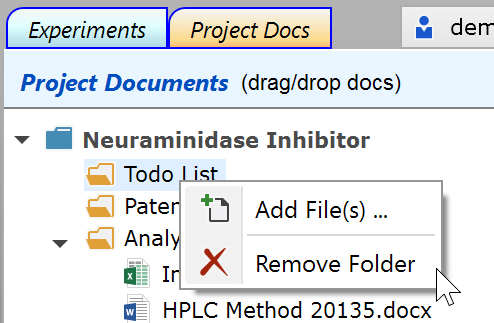

Embedding Documents
Embedding Documents into Experiments
Embedding files into experiment protocols is described here for images, and here for all other file types. Image files are displayed directly in the protocol, while non-image files are opened and/or edited using their default application; thus, clicking an MS Word document icon in the protocol usually launches MS Word for displaying it, if installed on the machine, and the changes are persisted inside the protocol after saving the document.

Embedding Documents into Project Context
Documents are not always experiment related, they also may be project-level related. These could include as timelines, todo lists, patents, general literature, or templates of often used analytical methods. Espresso ELN provides a location for such documents in the Project Docs tab located in the Experiments Section.

New projects initially contain a document folder titled "General", which can be renamed by clicking an already selected project header. More folders can be added using the project context menu:

Using the document folder context menu, folders can be removed and files can be added using the file dialog instead of Drag/Drop:

Drag/Drop: To add documents to a folder, drag a document (or a selection of documents) from Windows Explorer or the Desktop, then drop them onto a document folder or into a location inside its documents, if present. You can even Drag/Drop complete folders into the project documents - however, sub-folders and their contents are ignored for import when doing so.
|
Important Embedding a document places an independent copy of it into the ELN, not a link to the original. |
Documents and folder locations can be rearranged via Drag/Drop.
When using project documents as templates for documents to be embedded in an experiment, a document can be dragged from the document tree and dropped onto the desired location within the experiment protocol. As above, this creates an independent copy of the dragged document - therefore modifying it on the project level will not apply any changes to the embedded copyin the protocol, and vice versa.
Document Editing
Double-clicking a document in the project documents tree opens it within its default application for editing or viewing. When editing an embedded document, its contents are only updated in the ELN whenever the file is saved in its parent application. Exception: The contents of finalized experiments are never updated.
|
Important When editing an embedded document, don't use 'Save As ...' within the parent application, otherwise changes are no more updated during the current edit session. - Reason: For editing, the document is created inside and opened from a special temporary folder designed to keep track of changes to it in the background - modifying name or location of the file would break this update connection. |
Archival/Sharing
When a project archive is created, all project documents are embedded into its generated PDF file. If this is not desired, the archive dialog contains an option for not embedding them; this selection is remembered until modified again. Since the default application for viewing and/or editing an embedded file must be present on the current machine for accessing its contents, it is good practice to convert the content of uncommon file formats into a PDF file for final embedding.